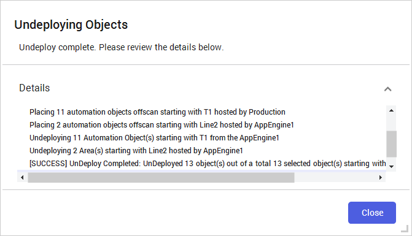
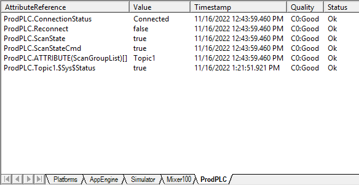

Right-clicking Mixer100 in the Model-Tagname view reveals the Undeploy option highlighted in the context menu. Other options include Deploy, Rename, Cut, Copy, and Properties.
Source: AVEVA Application Server 2023 Training Manual, Module 5, Section 3 (pages 5-27 to 5-28)
With your OI Server configured and your automation objects built, this is where you close the loop — deploying objects to the runtime, undeploying them when changes are needed, and verifying that live field data flows through the IO Devices view.
Reference: Module 5, Section 3 (page 5-27)
Once your automation objects have been bound to I/O sources (via OI Server topics and tags), they must be deployed to the runtime engine before they can communicate with field devices. Deployment pushes your Galaxy objects from the development database into the live execution environment.
| State | Description | Data Flow |
|---|---|---|
| Development (Undeployed) | Object exists only in the Galaxy IDE. You can edit and save it freely. | No live data — attributes use simulation expressions or hardcoded values. |
| Deployed (Running) | Object is pushed to the runtime engine on the target platform. | Full data flow — attributes read/write live values via OI Server. |
| Off-Scan (Undeployed) | Object has been removed from the runtime and returns to development-only status. | Data flow stops. Attributes revert to simulation values. |
Reference: Module 5, Section 3 (page 5-27)
Sometimes you need to remove objects from the running system — perhaps to make major changes, clean up test objects after commissioning, or temporarily take an object offline. The Undeploy operation removes selected objects from the runtime engine and returns them to development-only status.
To undeploy an object:
Reference: Module 5, Section 3 (page 5-27)
After confirming the undeployment, Application Server displays a completion summary. This summary is essential for verifying exactly what was removed from the runtime.


| Element | Count | Why It Was Undeployed |
|---|---|---|
| Automation Objects | 11 | Directly selected or contained within the undeployed areas |
| Area Objects | 2 | Parent containers — undeploying an area removes everything inside it |
| Total | 13 | Complete removal from the Production/AppEngine1 runtime node |
Reference: Module 5, Section 3 (page 5-28)
The IO Devices view in the Galaxy IDE provides a real-time view of all field data tags available from your configured OI Servers. This is your primary tool for verifying that the OI Server is communicating correctly and for browsing which tags are available for binding to your automation objects.

The IO Devices view shows a hierarchical tree structure:
| Level | Example from Screenshot | Description |
|---|---|---|
| Galaxy Root | TrainingGalaxy | Your application container — the root of the tree |
| OI Server Node | ProdPLC | The communication server running on a specific machine (Production) |
| Topic | Topic1 | A configured communication channel to a specific PLC or device |
| Tags | Agitator_001, Inlet1_001, Level1 | Individual data points available from the PLC through this topic |
Agitator_001), the inlet valve (Inlet1_001), and the tank level (Level1). These are the tags you bind your automation object attributes to.L1 for level, T1 for temperature). Useful during development when you don't have access to the physical PLC.Right-clicking on items in the IO Devices view provides context-sensitive operations for debugging and managing your field data connections:
| Operation | Purpose |
|---|---|
| Browse Tags | Open the tag browser to see all available tags and their current values from the OI Server |
| Edit Topic | Modify topic properties — change connection parameters, polling rates, or device addresses |
| View Values | See real-time values for all tags under a topic — useful for verifying OI Server communication |
| Refresh | Force a refresh of the tag list from the OI Server |
Reference: Module 5, Section 3 (pages 5-27 to 5-28)
Let's put all the pieces together. Here is the complete path that field data takes from the physical sensor to your Application Server object:
| Step | Component | What Happens |
|---|---|---|
| 1 | Physical Sensor / PLC | A sensor produces a real-world value (e.g., a level transmitter reads 64.5%). The PLC stores this in a register. |
| 2 | OI Server (ProdPLC/Topic1) | The OI Server polls the PLC over its native protocol (Modbus, EtherNet/IP, etc.) and makes the value available as a tag (e.g., Topic1.Level1). |
| 3 | IO Devices View | You can see the live tag value in the IO Devices view, confirming the OI Server is receiving data. |
| 4 | Application Object (I/O Source Binding) | Your automation object's attribute has its I/O Source set to Topic1.Level1. Application Server reads the value from the OI Server topic. |
| 5 | Deployed Runtime | The object is deployed and running. The attribute continuously reflects the live value from the field device. |
| 6 | HMI / Historian | Operator screens display the live value. If history is enabled, the Historian archives the data for trending and analysis. |
TopicName.TagName. For the ProdPLC data source, valid bindings include:
Topic1.Agitator_001 — bind to the agitator motor statusTopic1.Inlet1_001 — bind to the inlet valve commandTopic1.Level1 — bind to the tank level sensorL1 for level, T1 for temperature.
Reference: Module 5, Section 3 (pages 5-27 to 5-28)
Here is the typical workflow for connecting application objects to field data in a real project:
Topic.Tag stringTopic1.Level instead of Topic1.Level1) will result in a Bad Quality attribute.| Topic | Key Points |
|---|---|
| Deployment | Pushes Galaxy objects from the IDE to the runtime engine. Objects must be deployed to communicate with field devices. |
| Undeployment | Removes objects from the runtime. Undeploying an area cascades to all child objects. Review the confirmation dialog carefully. |
| IO Devices View | Shows all available tags from OI Servers organized by Galaxy → Node → Topic → Tags. Use this to verify OI Server communication. |
| I/O Source Syntax | TopicName.TagName — e.g., Topic1.Level1. Always verify the tag exists in the IO Devices view before binding. |
| Data Flow | PLC → OI Server (Topic) → IO Devices View → Application Object (I/O Source Binding) → Deployed Runtime → HMI / Historian |
| Hot Deployment | Redeploying an already-deployed object pushes updates to the running system without stopping it. |
| Off-Scan State | After undeployment, objects return to development-only status. Attributes revert to simulation values. |
In the example shown, undeploying Mixer100 resulted in 13 objects being removed. How many were automation objects and how many were area objects? Why were area objects also removed?
11 automation objects and 2 area objects were undeployed. The area objects were also removed because undeploying an area cascades to all objects within it — when you remove the container from the runtime, everything inside goes with it.
What is the purpose of the IO Devices view in the Galaxy IDE?
The IO Devices view shows all available field data tags from your configured OI Servers, organized in a hierarchy of Galaxy → OI Server Node → Topic → Tags. It is used to verify that OI Servers are communicating correctly and to browse which tags are available for I/O source binding.
What is the I/O source syntax for connecting an attribute to the Level1 tag on Topic1?
The I/O source syntax is Topic1.Level1. The format is always TopicName.TagName.
What are the three states in the deployment lifecycle of an automation object?
Development (Undeployed) — object exists only in the Galaxy IDE with no live data flow. Deployed (Running) — object is pushed to the runtime engine and communicates with field devices via OI Servers. Off-Scan (Undeployed) — object has been removed from the runtime and returns to development-only status.
You want to modify a major section of your automation logic. Should you modify the objects while they are deployed, or undeploy them first? What are the tradeoffs?
For minor changes, you can modify and redeploy (hot deploy) without stopping the runtime — this is faster and avoids disrupting the running system. For major changes, it is safer to undeploy first, make all modifications, then re-deploy. The tradeoff is that undeploying stops all data flow for those objects (attributes revert to simulation values), which may affect other objects or operator screens that depend on them.